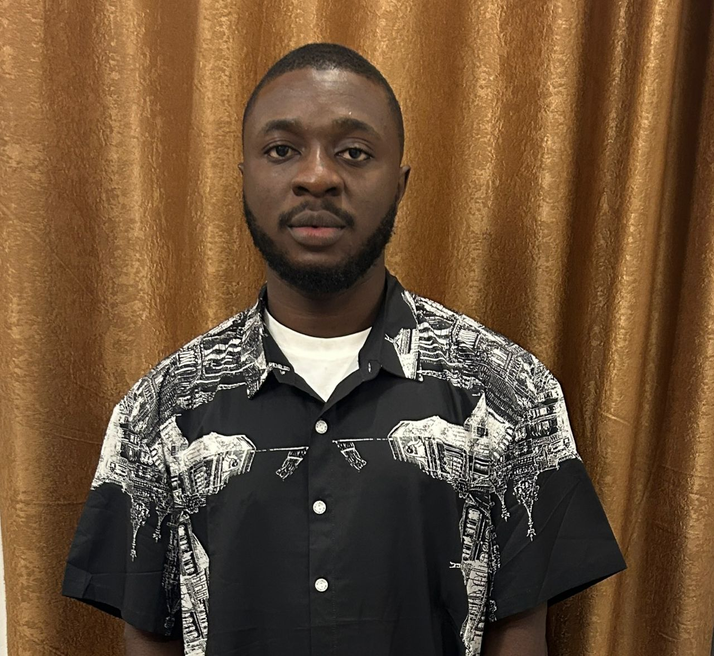

Olalekan Ogunremi

Objective
Analytical and detail-oriented personnel with experience in coordinating, planning, organizing and supporting daily operational and administrative functions to excel in an organization.
- Demonstrated capacity to provide comprehensive support for management including managing and coordinating activities and processes in support of effective service.
- Outstanding interpersonal, customer service, leadership, and organizational skills, thrive within detail-oriented, result-driven environments.
- Adept at managing and streaming administrative processes to reduce errors, improve accuracy and efficiency, and achieve organization objectives.
Educational Background With Qualification
- ESAE University Cotonou Benin Republic. Bsc Computer Science, 2018 - 2021
- Moshood Abiola Polytechnic Abeokuta. ND 2014 - 2016
- Nawal-Ud-Deen Grammar School, Solu Ifo. SSCE 2011 - 2014
- Lagos State Junior Model College Agbowa Ikosi. JSCE 2009 - 2011
- Yinmab Nursery and Primary School, Ewu Elepe. FSLC 2005 - 2009
Work Experience
- Regularly acknowledged by leadership for timeliness and attention to detail.
- Demonstrated flexibility and excellent work ethic in enthusiastically taking on additional responsibilities in addition to primary office responsibilities.
Skills
- Ability to work with little or no supervision.
- Report and document preparation
- Good Mathematical Skills and Ability to Make Quick Calculation.
Other